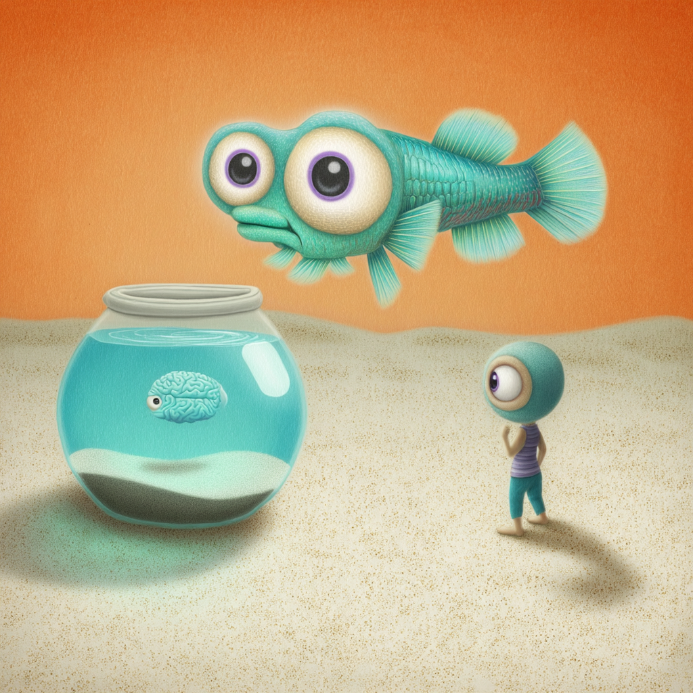

The Amazing Adventure of the Tiny Fish Brain Factories
Chapter 1: Meet the Super-Fast Fish

Once upon a time, in the warm pools of Africa, there lived some very special fish called turquoise killifish. These weren't ordinary fish - they were like nature's speed racers! While most fish live for many years, these colorful little creatures lived their entire lives in just 4-6 months. It's like if a whole human lifetime happened in just one season!
Scientists discovered that these turquoise killifish were perfect for studying something very important: what happens to our brains as we get older[1][6]. You see, even though these fish live super-fast lives, they go through all the same aging changes that happen to humans - just much, much faster!
Chapter 2: The Mystery of the Sleepy Brain Factories

Inside every single cell in your body - and in the killifish's body too - there are thousands of tiny factories called ribosomes. Think of ribosomes as the tiniest factories you can imagine, so small you'd need a super-powerful microscope to see them. Their job is to make proteins, which are like the building blocks and workers that help our bodies function[2][4].
These ribosome factories work like assembly lines in a car factory. They read special instruction manuals called mRNA (messenger RNA) - kind of like a recipe book - and use these instructions to build proteins by connecting tiny building blocks called amino acids together, one by one[2].
But here's where the mystery began: Scientists noticed that as the killifish got older, something strange was happening in their brain factories. The ribosomes started to slow down, get stuck, and even crash into each other[1].
Chapter 3: The Great Traffic Jam

Imagine you're on a busy highway where cars (ribosomes) are supposed to drive smoothly and deliver important packages (make proteins). But suddenly, some cars start driving really slowly or even stop completely, causing traffic jams!
That's exactly what the scientists discovered was happening in the aging fish brains. The ribosomes were getting stuck while trying to read certain parts of their instruction manual - especially when they came to instructions for making proteins that contained lots of special ingredients called "basic amino acids" (like lysine and arginine)[1][2].
These basic amino acids are super important because they're found in proteins that help take care of our DNA (the master instruction book) and RNA (the copies of instructions). It's like the workers whose job it is to maintain the library and copy machines were disappearing[3][4].
Chapter 4: The Detective Work

The scientists became like super detectives, using amazing tools to peek inside the tiny fish brains and see exactly what was going wrong. They compared young fish brains (like kids), adult fish brains (like grown-ups), and old fish brains (like grandparents) to see how things changed over time[2].
What they discovered was incredible! They found that in the aging brains, the ribosome factories were having trouble moving along their instruction manuals. They kept getting stuck and pausing, especially when they hit certain "difficult words" - the codes for those important basic amino acids[1].
It was like trying to read a book where some pages were really hard to turn, causing the reader to pause and struggle, slowing down the whole story!
Chapter 5: The Missing Workers

Because the ribosome factories were getting stuck so often, they couldn't make enough of the important proteins that help take care of DNA and RNA. This created a big problem - it was like having a city where all the repair workers, librarians, and maintenance crews suddenly disappeared[3][4].
The scientists realized this was a big deal because these missing proteins normally help:
- Fix damage to our DNA (like fixing torn pages in a book)
- Make copies of important instructions
- Keep everything organized and working properly
This discovery helped explain why brains become more likely to develop diseases like Alzheimer's as they get older - because the cellular maintenance crew isn't working properly anymore[2].
Chapter 6: Why This Matters for You

Now you might be wondering, "Why should I care about tiny fish and their microscopic factories?" Well, here's the amazing part: the same basic processes that happen in killifish brains also happen in human brains! Scientists can use what they learn from these fast-living fish to understand how human brains age too[1][2].
This research is like finding the first piece in a giant puzzle. By understanding exactly what goes wrong with our cellular factories as we age, scientists hope to develop new medicines that could help keep our brains healthy longer and maybe even prevent diseases that affect older people[2][7].
Chapter 7: The Amazing Science Team

This incredible discovery was made by a team of scientists from around the world - from places like Stanford University in California and research centers in Germany and Italy. As one of the lead scientists, Professor Judith Frydman, explained:
Just like detectives solving a mystery, these scientists used super-advanced tools to peek inside cells and watch the tiny factories at work. They used techniques with names like "ribosome profiling" and "mass spectrometry" - which are basically ways to take incredibly detailed pictures and measurements of things too small to see with regular microscopes.
The Big Picture
This story shows us how everything in our bodies is connected - from the tiniest factories in our cells to how our brains work as we grow older. The turquoise killifish, living their super-fast lives in African pools, have helped scientists understand something that could help all of us live healthier, longer lives.
The research continues as scientists work to understand more about how we can keep our cellular factories running smoothly and what we might be able to do to help our brains stay healthy as we age[1].
And the next time you see a fish - even if it's just a goldfish in a bowl - remember that inside its tiny brain are millions of microscopic factories, working day and night to keep it healthy and swimming strong!
Fun Facts for Young Scientists
- A single cell can have up to 10 million ribosomes working inside it!
- These cellular factories are so important that they exist in every living thing - from the tiniest bacteria to the largest whales
- The instructions (DNA) in your cells contain about 3 billion "letters" - enough to fill 200 telephone books!
- Scientists are still discovering new things about how our bodies work, just like the detective story we just read
What You Can Do
- Stay curious about science - every big discovery starts with someone asking "Why does this happen?"
- Take care of your brain by eating healthy foods, getting enough sleep, and staying active
- Remember that even the smallest creatures can teach us the biggest lessons about life!